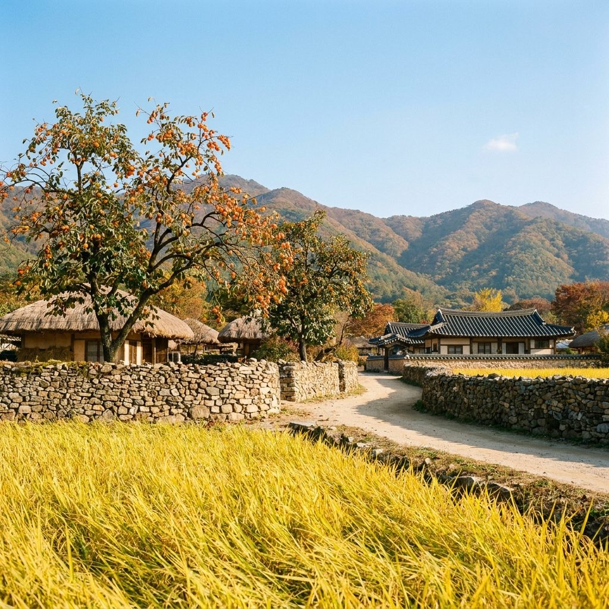
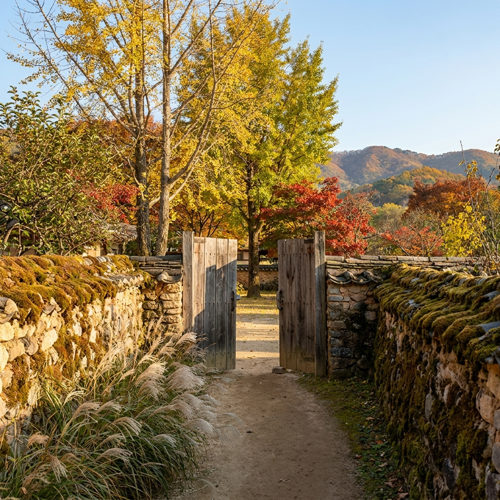
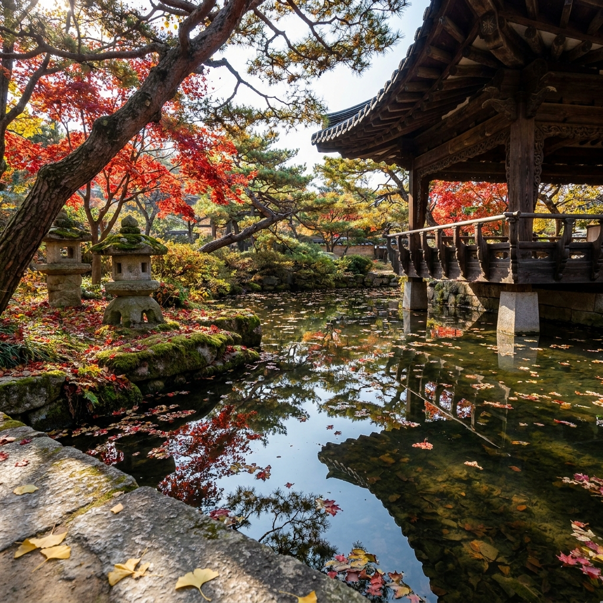

아산 외암민속마을 가을 산책 코스와 관람 팁 — 황금들녘 돌담길 감나무 포토존과 주차장 요금
충남 아산의 외암민속마을(국가민속문화재 제236호)은 10월 중순부터 황금빛 벼가 무르익는 들판과 돌담길 너머 주홍빛 감이 주렁주렁 매달린 감나무가 어우러져 가장 고즈넉한 가을 풍경을 자랑합니다.
총연장 5.3km에 달하는 돌담길 골목과 건재고택·참판댁을 둘러보는 추천 산책 코스는 도보 약 1시간 30분에서 2시간이 소요되며, 실제 주민들이 거주하는 살아있는 전통 마을이므로 조용한 관람 매너가 필수적입니다.
입장료는 성인 기준 2,000원(청소년·어린이 1,000원)이며, 마을 입구 공영주차장은 전면 무료로 운영되어 부담 없이 가을 당일치기 나들이를 즐기실 수 있습니다.

황금빛 벼가 익어가는 들판과 돌담길 너머 주홍빛 감이 주렁주렁 열린 가을 외암민속마을 초가집 풍경 / AI 제작 이미지
01 | 500년 전통의 살아있는 민속마을, 아산 외암마을의 가을 매력
충남 아산시 송악면에 자리 잡은 외암민속마을은 약 500년 전 예안 이씨 일가가 정착하며 형성된 전통 반촌(班村) 마을입니다.
인위적으로 지어 올린 민속촌 세트장이 아니라, 지금도 60여 호의 주민들이 실제 농사를 짓고 생활을 영위하고 있는 '살아 숨 쉬는 역사 마을'입니다.
설화산(雪華山) 자락의 아늑한 명당에 배산임수 지형으로 안겨 있는 외암마을은 사계절이 모두 아름답지만, 10월 중순부터 11월 초순까지가 1년 중 가장 눈부신 절정을 이룹니다.
황금 물결이 일렁이는 들판, 야트막한 돌담 너머로 가지가 휠 듯 매달린 주홍빛 감, 그리고 소담스러운 초가집 지붕 위로 피어오르는 저녁 연기는 도시 생활에 지친 현대인들에게 따뜻한 위로와 쉼을 선물합니다.
02 | 황금들녘과 5.3km 돌담길을 잇는 추천 산책 코스
외암마을의 가장 큰 특징은 마을 전체를 실핏줄처럼 엮어주는 5.3km 길이의 돌담길입니다.
마을을 개간하며 밭과 집터에서 나온 둥글둥글한 자연석을 흙 한 줌 섞지 않고 차곡차곡 쌓아 올려 만든 돌담은 오랜 세월의 이끼와 담쟁이덩굴을 품고 있어 걷는 내내 편안한 정감을 자아냅니다.
처음 방문하시는 분들을 위한 최적의 산책 코스를 추천해 드립니다.
🚶 외암마을 가을 힐링 산책 추천 동선 (총 1.8km / 약 90분 소요)
1. 매표소 및 외암교 건너기: 맑은 반석천을 건너며 마을 전체 전경과 황금들녘 조망
2. 물레방아와 연엽주 가옥: 충남 무형문화재 연엽주 제조 명인의 고택 돌담길 탐방
3. 건재고택(영암댁): 대한민국 명승 제60호, 아름다운 정원과 소나무가 어우러진 대표 한옥 관람
4. 돌담길 감나무 골목: 외암마을에서 가장 예쁜 감나무 포토존이 밀집된 중심 안길 산책
5. 교수댁 및 참판댁: 조선 후기 유학자의 기품이 깃든 고택과 장독대 풍경 감상
6. 민속관 및 저잣거리: 짚풀 체험존 관람 후 저잣거리로 이동해 파전과 도토리묵으로 마무리
03 | 주홍빛 감나무와 초가집 처마가 빚어내는 대표 포토스팟 4선
외암마을 곳곳은 어디에 카메라를 들이대도 엽서 같은 사진이 나오지만, 가을철 특별한 인생샷을 남길 수 있는 대표 명소 4곳이 있습니다.
| 포토스팟 명칭 |
촬영 포인트 및 특징 |
추천 시간대 |
| 외암교 입구 황금들판 |
마을 앞 황금빛 논과 설화산 능선, 초가집을 배경으로 광각 파노라마 |
오전 10:00 ~ 11:30 (순광) |
| 건재고택 앞 곡선 돌담길 |
돌담 위로 탐스럽게 익은 주홍빛 감과 흙벽 골목의 유려한 곡선미 |
오후 14:00 ~ 15:30 |
| 마을 중앙 연못과 정자 |
설화산에서 흘러내린 자연 수로가 모이는 인공 연못에 비친 한옥 반영 |
오전 11:00 ~ 13:00 |
| 초가집 장독대 골목 |
정갈하게 옹기종기 모여 있는 장독대 뒤로 물든 은행나무와 억새 |
오후 16:00 ~ 17:00 (노을빛) |
📸 가을 감성 사진 팁: 햇살이 뉘엿뉘엿 기울기 시작하는 오후 4시경에는 따스한 황금빛 사광이 돌담과 감나무를 비추어 감의 주홍빛 색감이 한층 극대화됩니다. 스마트폰 인물 사진 모드(2배~3배 망원)로 돌담을 프레임 앞쪽에 걸치고 촬영하면 깊이감 있는 사진이 완성됩니다.

외암민속마을 돌담길을 따라 걷는 고즈넉한 한옥 골목과 억새 군락 / AI 제작 이미지
04 | 건재고택과 참판댁 등 주요 한옥 명소 관람 포인트와 개방 시간
외암마을에는 서민들의 초가집뿐만 아니라 조선 후기 사대부 계층의 격조 높은 기와집들이 조화롭게 공존하고 있습니다.
그중 으뜸은 단연 건재고택(영암댁)입니다. 조선 숙종 때의 문신이자 성리학자인 외암 이간(李柬) 선생이 태어난 터에 후손들이 지은 고택으로, 한국 전통 정원의 백미로 꼽힙니다.
마당 한가운데에 설화산 계곡물을 끌어들여 만든 곡수(曲水) 연못과 기암괴석, 수백 년 수령의 소나무와 소나무 분재가 어우러진 정원은 한 폭의 진경산수화를 감상하는 듯한 감동을 줍니다.
건재고택은 국가유산 보호를 위해 주말 및 공휴일 지정 시간대(10:30, 13:30, 15:30 등 문화관광해설사 동행 투어)에 한해 특별 개방되므로 사전에 해설 시간을 확인하고 맞추어 방문하시기를 권장합니다.
인근의 참판댁(이정렬 가옥) 역시 고종 황제에게 하사받은 편액과 장중한 솟을대문, 정갈한 사랑채가 잘 보존되어 있어 사대부가의 건축 미학을 엿볼 수 있습니다.
05 | 가을 짚풀문화제 행사 일정과 전통 체험
매년 10월 중순이 되면 외암민속마을 일원에서 유서 깊은 전통 축제인 '외암민속마을 짚풀문화제'가 개최됩니다.
추수가 끝난 뒤 남은 볏짚을 활용해 초가지붕을 새로 잇던 전통 두레 문화를 계승한 행사로, 온 마을 사람들이 모여 이엉 엮기와 용트림을 시연하는 진풍경을 직접 목격할 수 있습니다.
축제 기간에는 방문객 누구나 참여할 수 있는 다채로운 민속 체험 부스가 운영됩니다.
• 짚풀 공예 체험: 달걀꾸러미 만들기, 짚신 삼기, 여치집 만들기
• 전통 먹거리 체험: 떡메치기 인절미 맛보기, 군밤 굽기, 가마솥 누룽지 시식
• 민속놀이 한마당: 널뛰기, 제기차기, 굴렁쇠 굴리기, 그네타기 체험
아이들에게는 살아있는 민속 교육의 장이 되고, 어르신들에게는 아련한 유년 시절의 향수를 불러일으키는 뜻깊은 시간이 됩니다.

건재고택 마당의 소나무와 가을 단풍이 어우러진 전통 정원 전경 / AI 제작 이미지
06 | 외암민속마을 입장료·관람 시간 및 무료 입장 대상 조건
외암마을은 문화유산 보존 및 환경 정비를 위해 소정의 문화재 관람료를 징수하고 있습니다.
| 구분 |
개인 요금 |
단체 요금 (30인 이상) |
비고 |
| 어른 (만 19세 ~ 64세) |
2,000원 |
1,600원 |
카드 및 현금 결제 가능 |
| 청소년·군경 (만 13세 ~ 18세) |
1,000원 |
800원 |
학생증 또는 신분증 제시 |
| 어린이 (만 7세 ~ 12세) |
1,000원 |
800원 |
초등학생 |
| 무료 관람 대상자 |
0원 |
0원 |
아산시민, 만 6세 이하, 만 65세 이상 어르신, 국가유공자, 장애인 (증빙 필수) |
관람 시간은 하절기(3월~10월) 기준 오전 09:00부터 오후 18:00까지이며, 매표 마감은 운영 종료 30분 전(17:30)입니다.
동절기(11월~2월)에는 일몰 시간을 감안해 17:00까지 단축 운영되므로 늦은 오후 방문 시 유의하시기 바랍니다.
07 | 공영주차장 위치별 요금과 단풍철 주말 만차 회피 팁
외암민속마을을 찾으시는 자가용 이용객들을 위해 주차장 정보를 꼼꼼하게 정리했습니다.
🚗 외암민속마을 주차장 안내 (요금: 전면 무료)
• 제1공영주차장(정문 매표소 앞): 충남 아산시 송악면 외암민속길 9번길 일원 (약 200대 주차 가능). 매표소 및 외암교 바로 앞이라 접근성이 가장 좋지만 주말 11시 전후로 만차됩니다.
• 제2공영주차장(저잣거리 주차장): 아산시 송악면 역촌리 일원 (약 350대 대형 주차장). 공간이 매우 넓고 식당가가 인접해 있어 주말 방문 시 추천하는 최적의 주차 포인트입니다. 저잣거리에서 마을 본동까지는 도보 8분(약 500m)의 예쁜 둑길 산책로로 이어집니다.
• 대형 버스 주차장: 단체 관광버스를 위한 전용 주차 공간 별도 완비.
⚠️ 주말 방문 주의사항: 10월 주말과 단풍 성수기에는 39번 국도에서 마을로 진입하는 편도 1차로 구간이 지체될 수 있습니다. 오전 10시 30분 이전 또는 오후 15시 이후에 도착하시면 제1공영주차장에도 여유롭게 주차하실 수 있습니다.
08 | 마을 안 저잣거리 파전·잔치국수 먹거리와 당일치기 주변 여행지
마을을 한 바퀴 산책하고 나면 출출해진 배를 채우기 위해 '외암마을 저잣거리'로 발걸음을 옮겨 보세요.
외암교 건너편에 조성된 저잣거리는 조선 시대 전통 주막과 장터를 재현한 먹거리 타운으로, 깔끔한 위생 환경 속에서 토속 음식을 맛볼 수 있습니다.
지글지글 고소한 냄새를 풍기는 해물파전과 녹두전, 시원하고 따뜻한 멸치 육수의 잔치국수, 새콤달콤한 도토리묵 무침이 인기 메뉴입니다.
여기에 외암마을의 전통 명주인 은은한 솔향의 연엽주(蓮葉酒) 한 잔을 곁들이면 가을날의 운치가 절정에 달합니다 (파전 1만 2천 원, 잔치국수 6~7천 원 안팎).
식사 후 당일치기 코스로 연계하기 좋은 주변 명소로는 차로 15분 거리인 곡교천 은행나무길(10월 말~11월 초 황금빛 터널 절정), 그리고 현충사(이순신 장군 고택과 가을 단풍 산책로)를 묶어 동선을 짜시면 완벽한 아산 하루 여행이 완성됩니다.
09 | 외암민속마을 가을 나들이 필수 체크리스트 & FAQ
마을을 방문하기 전 숙지해야 할 에티켓과 궁금증을 정리했습니다.
📋 외암마을 에티켓 & 준비물 체크리스트
[ ] 거주 주민 사생활 보호: 실제 주민들이 거주하는 안채는 문이 닫혀 있을 경우 무단출입을 절대 삼가세요.
[ ] 편안한 운동화 준비: 돌담길 골목 바닥이 흙길과 자갈길로 이루어져 있어 굽 높은 신발은 불편합니다.
[ ] 마을 전 구역 절대 금연: 목조 문화재와 초가집이 밀집된 문화재 보호구역이므로 화기 사용 및 흡연이 엄격히 금지됩니다.
[ ] 감나무 열매 채취 금지: 돌담 너머로 늘어진 감은 마을 주민들의 소중한 농작물이므로 손으로 따지 마세요.
❓ 자주 묻는 질문 FAQ
Q1. 마을 내부에서 한복 대여가 가능한가요?
A1. 네, 외암마을 매표소 인근 및 민속관 체험존에서 전통 한복을 대여해 입고 돌담길을 산책할 수 있습니다. 한복을 착용하고 사진을 찍으면 더욱 멋진 인생샷을 남기실 수 있습니다.
Q2. 반려견 동반 산책이 가능한가요?
A2. 야외 돌담길 골목 산책은 목줄(길이 2m 이내)과 배변봉투를 지참할 경우 동반 가능합니다. 단, 건재고택 등 실내 문화재 보호 구역 출입은 제한됩니다.
Q3. 유모차나 휠체어로 관람하기 괜찮은가요?
A3. 마을 중심 안길은 완만한 경사의 평지로 포장되어 있어 유모차나 휠체어 이동이 수월합니다. 다만 일부 좁은 골목은 자연석 돌길이라 덜컹거림이 있을 수 있습니다.
📌 함께 읽으면 좋은 가을 나들이·여행 실무 가이드
#외암민속마을
#아산가볼만한곳
#가을나들이
#외암마을돌담길
#건재고택
#짚풀문화제
#외암마을저잣거리
#아산여행코스
#황금들녘감나무
#국내여행추천